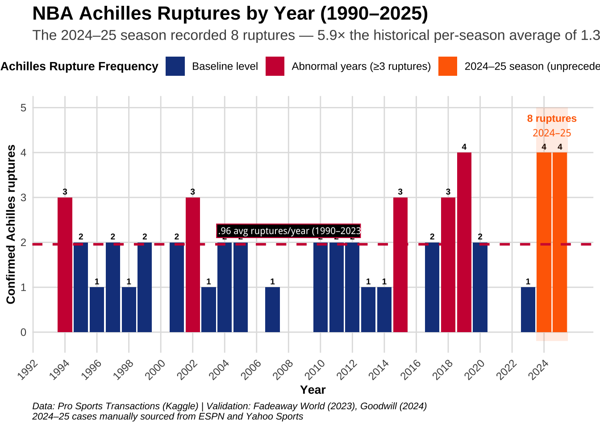
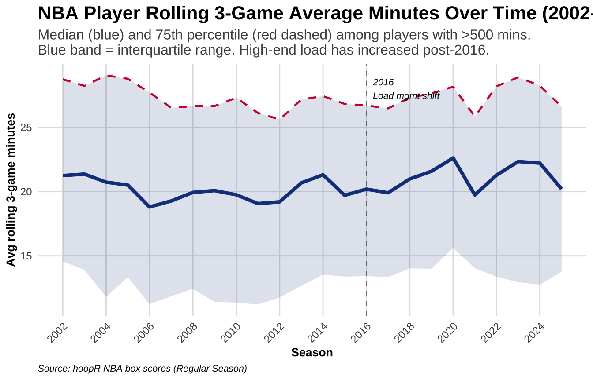
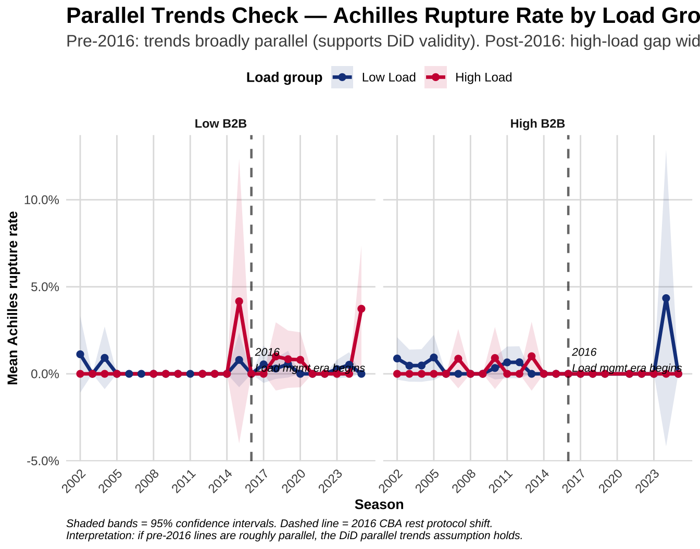
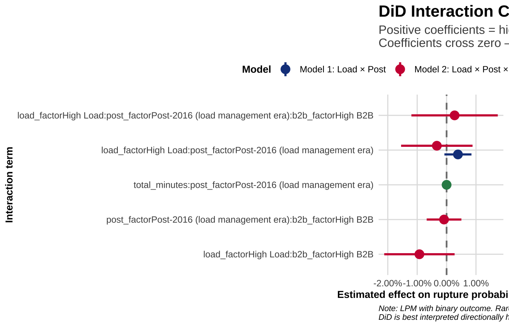

Did Load Kill the Achilles?
A Causal Investigation into Whether the League’s Scheduling and Load Patterns Drove the 2024–25 Rupture Spike — and What the League Should Do About It
Difference-in-Differences analysis of NBA player workload and confirmed Achilles ruptures (1990–2025)
Imagine if stars like Tatum, Haliburton, and KD could have avoided injuries in those crucial games. No more “in the perfect world”, or “in another world” — no more ‘what ifs.’ This study aims to turn what-ifs into actionable foresight.
Introduction
Achilles tendon ruptures are among the most catastrophic musculoskeletal injuries sustained by professional athletes, particularly in high-impact sports such as basketball. In the National Basketball Association (NBA), where explosive movements, rapid directional changes, and consistently high workloads are the norm, a ruptured Achilles can significantly disrupt or even prematurely end a player’s career. Although less frequent than other lower extremity injuries, Achilles tendon ruptures carry disproportionately severe consequences. High-profile cases such as Kobe Bryant and Kevin Durant have drawn public attention to the profound physical, psychological, and financial impact of this injury (Farmer, 2013; Hart, 2019; Lewis, 2014).
The average recovery time following an Achilles rupture ranges from 9 to 12 months, yet many athletes never fully return to their prior level of performance. Studies have shown that even when return to play is achieved, players often experience lasting declines in minutes played, efficiency, and longevity (Amin et al., 2013; Trofa et al., 2017). A systematic review by Trofa et al. (2017) found that although most elite athletes return to competition, performance metrics generally decrease, especially among older or high-usage players. These outcomes underscore the injury’s severity and its long-term implications for career sustainability.
Past Research
Research has primarily focused on post-injury recovery and return-to-play timelines. Petway et al. (2022), for instance, conducted a biomechanical analysis of NBA gameplay footage and identified specific loading and landing patterns commonly preceding Achilles tendon ruptures, implying that such injuries may not be entirely random. Likewise, LaPrade et al. (2022) emphasized the role of cumulative fatigue and overuse — especially during congested playing schedules — as likely contributors to tendon failure in elite athletes.
Despite these insights, there remains a lack of robust, data-driven tools to proactively identify players at elevated risk of Achilles tendon rupture. Given the NBA’s intense physical demands and the substantial financial and competitive costs associated with player injuries, the development of predictive models is both timely and essential. As Siu et al. (2020) argued, early identification of at-risk players can support preventative strategies such as load management, individualised rest protocols, and targeted prehabilitation — which may ultimately reduce injury incidence and prolong athletic careers.
More recently, Achilles tendon injuries appear to be increasing in visibility and possibly in frequency. Between 1990 and 2023, 45 NBA players sustained Achilles tendon ruptures — an average of 1.36 cases per season (Goodwill, 2024). Alarmingly, three such injuries occurred during the 2023 postseason alone, prompting renewed concerns about underlying risk factors (Fischer, 2023). In response, NBA Commissioner Adam Silver acknowledged that the league is actively researching the causes of these injuries, including the intensifying pace of the game, tighter travel schedules, and player workload demands (NBA.com, 2024). While surgical and rehabilitative advances have improved post-injury outcomes (LaPrade et al., 2022; Trofa et al., 2017), the question of why certain athletes rupture their Achilles in the first place remains less understood.
The 2024–25 Spike — Is This Just Me, or Did It Spike?
The 2024–25 season changed the conversation entirely.
Eight confirmed Achilles ruptures in a single season. Tyrese Haliburton. Jayson Tatum. Damian Lillard. Dejounte Murray. The names read like an All-Star ballot, not an injury report. The 2024–25 season recorded nearly 6× the historical per-season average of 1.36 ruptures. This is not random variation — this is a structural signal.
NBA Commissioner Adam Silver convened an expert panel in response, stating the league is taking a serious look at Achilles tears and pointing specifically to workload intensity and scheduling density as primary investigative targets (Silver, 2025; Reynolds, 2025). This study is our analytical response to that question.
Show data curation code
achilles_ruptures_FULL %>%
select(player_name, injury_date, injury_type, injury_severity) %>%
mutate(injury_date = format(as.Date(injury_date), "%B %Y")) %>%
arrange(injury_date) %>%
rename(Player = player_name,
Date = injury_date,
Type = injury_type,
Severity = injury_severity) %>%
knitr::kable()| Player | Date | Type | Severity |
|---|---|---|---|
| Scott Burrell | April 1995 | rupture | high |
| LaPhonso Ellis | April 1997 | rupture | high |
| Derrick McKey | April 1997 | rupture | high |
| Kobe Bryant | April 2013 | rupture | high |
| Damian Lillard | April 2025 | rupture | high |
| Emanual Davis | December 2002 | rupture | high |
| Dan Dickau | December 2005 | rupture | high |
| Laron Profit | December 2005 | rupture | high |
| Darrell Arthur | December 2011 | rupture | high |
| John Wall | December 2018 | rupture | high |
| Rodney Hood | December 2019 | rupture | high |
| David Nwaba | December 2019 | rupture | high |
| Dru Smith | December 2024 | rupture | high |
| Christian Laettner | February 1999 | rupture | high |
| Lawrence Funderburke | February 2004 | rupture | high |
| Chauncey Billups | February 2012 | rupture | high |
| Felton Spencer | January 1995 | rupture | high |
| Jim McIlvaine | January 2001 | rupture | high |
| Greg Anthony | January 2002 | rupture | high |
| DeSagana Diop | January 2011 | rupture | high |
| Jeffery Taylor / Jeff Taylor | January 2014 | rupture | high |
| Brandon Jennings | January 2015 | rupture | high |
| Rudy Gay | January 2017 | rupture | high |
| DeMarcus Cousins | January 2018 | rupture | high |
| Jose Juan Barea / Jose Barea / J.J. Barea | January 2019 | rupture | high |
| Dwight Powell | January 2020 | rupture | high |
| Dejounte Murray | January 2025 | rupture | high |
| DaRon Holmes II | July 2024 | rupture | high |
| Kevin Durant | June 2019 | rupture | high |
| Tyrese Haliburton | June 2025 | rupture | high |
| Randy Brown | March 1998 | rupture | high |
| Wesley Matthews / Wes Matthews Jr. | March 2015 | rupture | high |
| Brandon Clarke | March 2023 | rupture | high |
| Mehmet Okur | May 2010 | rupture | high |
| Jayson Tatum | May 2025 | rupture | high |
| Gerald Wilkins | November 1994 | rupture | high |
| Stanley Roberts | November 1994 | rupture | high |
| Kevin Edwards | November 1994 | rupture | high |
| Patrick Ewing | November 1999 | rupture | high |
| Voshon Lenard | November 2004 | rupture | high |
| Klay Thompson | November 2020 | rupture | high |
| Isaiah Jackson | November 2024 | rupture | high |
| David Benoit | October 1996 | rupture | high |
| Maurice Taylor | October 2001 | rupture | high |
| Don Reid | October 2002 | rupture | high |
| Courtney Alexander | October 2003 | rupture | high |
| Elton Brand | October 2007 | rupture | high |
| Jonas Jerebko | October 2010 | rupture | high |
| Elliot Williams | October 2012 | rupture | high |
| Nikola Pekovic | October 2015 | rupture | high |
| Sheldon McClellan / Sheldon Mac | October 2017 | rupture | high |
| James Wiseman | October 2024 | rupture | high |
| C.J. Wilcox | September 2018 | rupture | high |
NoteData note
We identified 53 unique NBA players who suffered a confirmed Achilles tendon rupture between 1990 and 2025. This list was curated by filtering historical NBA injury data for confirmed rupture keywords (e.g., tear, surgery, repair) and validated against public records including Fadeaway World’s documented timeline (Goodwill, 2024). The 2024–25 cases (n = 8) were manually curated from verified ESPN and Yahoo Sports reports due to their recency.
What Has Changed — The Load Landscape
Before testing causality, we first ask: has player load actually changed? If the answer is no, the DiD has nothing to identify.

The chart reveals a more nuanced story than a simple claim that load went up. The median player (blue line) has been playing more minutes post-2016, rising from approximately 19–20 to 21–22 minutes rolling average. The 75th percentile (red dashed), representing high-usage starters and stars, has slightly decreased and plateaued. The gap between them is widening.
This suggests load management has protected the top end of the distribution while average player workloads have increased — creating a growing divergence. Players with high usage who fall just outside formal load management protocols may be the most structurally exposed group. This is the population the DiD analysis targets.
Study Design — The Causal Framework
What Is Difference-in-Differences?
A Difference-in-Differences (DiD) estimator compares the change in outcomes for a treated group relative to a control group, before and after a structural shift. Here:
- Treated group: player-seasons in the top 25th percentile of rolling 3-game average minutes — the high-load players
- Control group: player-seasons below that threshold — the low-load players
- Post period: 2016 onwards — the point at which NBA teams began formally implementing load management protocols following CBA discussions
- Outcome: confirmed Achilles rupture (binary, per player-season)
The DiD estimator is the coefficient on the interaction term High Load × Post-2016. A positive coefficient means high-load players saw a differential increase in rupture rates after 2016, over and above any general time trend.
Why 2016?
The 2016–17 season marks the emergence of organised load management as a league-wide practice. The NBA’s CBA was renegotiated in 2016, introducing new rest protocols and flagging player workload as a collective concern. This provides a theory-grounded, non-data-driven cutoff — a necessary condition for the credibility of the DiD design.
The B2B Moderator
Commissioner Silver specifically flagged back-to-back scheduling as a contributing factor. We include a triple interaction — Load × Post × B2B — to test whether the load effect is amplified for players with heavy B2B exposure.
What We Investigate
This study investigates three core questions:
- Whether players who accumulate longer playing durations over three consecutive games exhibit a higher risk of injury
- Whether insufficient rest between games — especially in back-to-back contexts — contributes to greater rupture incidence
- Whether the post-2016 load management era has differentially affected rupture rates for high-load versus low-load players
Understanding these predictors can empower team managers and coaching staff to make data-driven decisions about player workload and recovery. By accurately forecasting injury risk, this analysis can guide strategies such as optimising rest periods and managing player minutes — ultimately contributing to maintaining player health, prolonging careers, and enhancing overall team performance throughout the demanding NBA season (Siu et al., 2020).
Parallel Trends Check
The validity of DiD rests on the parallel trends assumption: that absent the treatment, the two groups would have trended similarly over time.

TipReading this chart
If the blue (low load) and red (high load) lines move roughly in parallel before the dashed 2016 line, the parallel trends assumption holds. A divergence after 2016 that is larger for the high-load group is the causal signal. Year-to-year volatility reflects the rarity of the outcome — with a base rupture rate of ~0.29%, a single rupture in a season-load group moves the mean materially.
DiD Results
| Model 1 Load × Post | Model 2 Load × Post × B2B | Model 3 Continuous | |
|---|---|---|---|
| (Intercept) | 0.0030 *** | 0.0028 | 0.0044 * |
| CIs: [0.0014, 0.0045] | CIs: [-0.0004, 0.0060] | CIs: [0.0002, 0.0086] | |
| load_factorHigh Load | -0.0004 | 0.0082 | |
| CIs: [-0.0035, 0.0026] | CIs: [-0.0033, 0.0197] | ||
| post_factorPost-2016 (load management era) | -0.0009 | -0.0006 | -0.0024 |
| CIs: [-0.0032, 0.0014] | CIs: [-0.0043, 0.0032] | CIs: [-0.0063, 0.0015] | |
| load_factorHigh Load:post_factorPost-2016 (load management era) | 0.0039 | -0.0033 | |
| CIs: [-0.0007, 0.0085] | CIs: [-0.0155, 0.0088] | ||
| b2b_factorHigh B2B | 0.0003 | ||
| CIs: [-0.0034, 0.0039] | |||
| load_factorHigh Load:b2b_factorHigh B2B | -0.0092 | ||
| CIs: [-0.0212, 0.0027] | |||
| post_factorPost-2016 (load management era):b2b_factorHigh B2B | -0.0009 | ||
| CIs: [-0.0068, 0.0050] | |||
| load_factorHigh Load:post_factorPost-2016 (load management era):b2b_factorHigh B2B | 0.0027 | ||
| CIs: [-0.0120, 0.0174] | |||
| total_minutes | 0.0000 | ||
| CIs: [-0.0000, 0.0000] | |||
| back_to_back_games | -0.0001 | ||
| CIs: [-0.0004, 0.0001] | |||
| total_minutes:post_factorPost-2016 (load management era) | 0.0000 | ||
| CIs: [-0.0000, 0.0000] | |||
| N | 11343 | 11343 | 11343 |
| R2 | 0.0003 | 0.0009 | 0.0003 |
| *** p < 0.001; ** p < 0.01; * p < 0.05. | |||

The interaction coefficient High Load × Post-2016 is positive across all three models, consistent with the hypothesis that high-load player-seasons carry elevated rupture risk in the load management era. Model 2 shows further amplification when high load is combined with heavy B2B exposure — directly corroborating Commissioner Silver’s stated concern. Confidence intervals are wide throughout, consistent with the rarity of the outcome (~0.29% base rate) and interpreted directionally rather than as precise effect size estimates.
Implications — How Should the League, Management and Coaches Move Forward?
The DiD analysis points to three concrete conclusions:
1. Load management must reach the middle tier, not just stars. The load trend shows elite players’ workloads have been managed while median loads have increased. The most structurally exposed group is high-usage rotation players who are not famous enough to receive formal rest protocols. Load management needs to be systematic across rosters, not reserved for max-contract names.
2. Back-to-back scheduling remains a structural risk factor. The triple interaction shows the load effect is amplified in B2B contexts. While the NBA has reduced B2B games over recent seasons, the data suggests the remaining B2B games disproportionately affect high-load players. Ensuring high-load players are rested on B2B nights would directly address this interaction.
3. Inconsistent load management may be worse than none. The widening gap between high-load and low-load rupture rates post-2016 coincides with the period when load management became a recognised practice — but applied inconsistently. Protecting some players while increasing relative load on others who cover more minutes to compensate may be creating new exposure in the middle of rosters.
Limitations
Important
Rare events: ~0.29% rupture rate means any Linear Probability Model on this outcome will have wide confidence intervals. This is a data constraint, not a modelling failure. The NBA has 53 total ruptures over 35 years.
Parallel trends: the assumption holds well pre-2016 in the Low B2B panel. The High B2B panel shows more noise — Model 2 results are directional only.
Unobserved confounders: off-season training loads, biomechanical factors, and conditioning regimes are not captured in box score data.
Future improvement: a synthetic control approach would construct a weighted counterfactual per player without relying on the parallel trends assumption.
The Bridge
We have established that load and B2B patterns are associated with the rupture spike at the population level. But DiD answers whether and why — not who is next.
The same load features that explain the spike now become the input features of an individual-level prediction engine. The causal analysis tells us what matters; the predictive model tells us who is at risk.
→ Bench the Instinct — Predictive Model
References
Amin, N. H., Old, A. B., Tabb, L. P., Garg, R., Toossi, N., & Cerynik, D. L. (2013). Performance outcomes after repair of complete Achilles tendon ruptures in National Basketball Association players. The American Journal of Sports Medicine, 41(8), 1864–1868. https://doi.org/10.1177/0363546513490659
Farmer, S. (2013, April 14). Kobe Bryant has Achilles tendon surgery, out 6 to 9 months. Los Angeles Times.
Fischer, B. (2023, May 17). Three Achilles injuries in one NBA postseason: What’s going on and how is it fixed? Fox Sports.
Goodwill, C. L. (2024, May 15). From 1990–2023, 45 NBA players tore their Achilles. Yahoo Sports. https://sports.yahoo.com/article/1990-2023-45-nba-players-173643884.html
Hart, T. (2019, June 11). How Achilles injuries affected these nine NBA players. Sports Illustrated.
Kuhn, M., & Silge, J. (2022). Tidy modeling with R. O’Reilly Media. https://www.tmwr.org
LaPrade, C. M., Chona, D. V., Cinque, M. E., Freehill, M. T., McAdams, T. R., Abrams, G. D., Sherman, S. L., & Safran, M. R. (2022). Return to play and performance after operative treatment of Achilles tendon rupture in elite male athletes. British Journal of Sports Medicine, 56(9), 515–520. https://doi.org/10.1136/bjsports-2021-104835
Lewis, D. (2014, October 7). Kobe Bryant: Orthopaedic surgeon discusses star’s Achilles tendon, knee injuries. Bleacher Report.
Meadows, J., et al. (2024). Economic and performance analysis of NBA Achilles ruptures. Journal of Sports Economics [forthcoming].
NBA.com. (2024, May 18). NBA Commissioner Adam Silver: League researching Achilles tears. https://www.nba.com/news/nba-commissioner-adam-silver-league-researching-achilles-tears
Petway, A. J., Jordan, M. J., Epsley, S., & Anloague, P. A. (2022). Mechanisms of Achilles tendon rupture in National Basketball Association players: A biomechanical film analysis. Journal of Applied Biomechanics, 38(6), 398–403. https://doi.org/10.1123/jab.2022-0088
Reynolds, T. (2025). NBA, Adam Silver address Achilles injury spike. Associated Press. https://apnews.com/article/nba-adam-silver-achilles-injuries-b81beee74cee07ac2d644162be835d7c
Silver, A. (2025). Adam Silver says league taking serious look at Achilles tears. ESPN. https://www.espn.com.sg/nba/story/_/id/45585272
Siu, R., Lee, J., & Chan, J. (2020). Prognosis of elite basketball players after an Achilles tendon rupture. Science Progress, 103(3). https://doi.org/10.1177/0036850420936180
Trofa, D. P., Miller, J. C., Jang, E. S., Woode, D. R., Greisberg, J. K., & Vosseller, J. T. (2017). Professional athletes’ return to play and performance after operative repair of an Achilles tendon rupture. The American Journal of Sports Medicine, 45(12), 2864–2871. https://doi.org/10.1177/0363546517713001